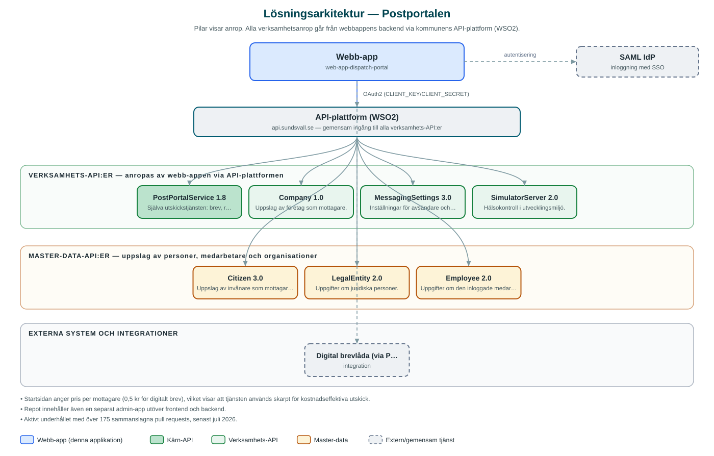

Postportalen
En portal där kommunens medarbetare skickar brev, rekommenderade brev och sms till invånare – digitalt till mottagare med digital brevlåda och annars som vanlig post.
Om applikationen
Postportalen samlar kommunens utskick till invånare på ett ställe. Medarbetare laddar upp dokument, anger mottagare via exempelvis personnummer och skickar sedan brevet. Mottagare med digital brevlåda får försändelsen digitalt, medan övriga automatiskt får den som vanlig post. Även rekommenderade brev och sms-utskick stöds.
Utskicket görs i ett guidat flöde med stegen mottagare, filer, rubrik och förvaltning samt granskning innan det skickas. Efteråt kan medarbetaren följa status för sina utskick under Dina utskick, och portalen visar även samlad statistik per förvaltning upp till ett år bakåt i tiden.
Tjänsten sänker kostnaden för utskick (digitala brev är väsentligt billigare än fysisk post) och mottagaruppgifter slås upp mot kommunens register för både privatpersoner och företag.
Det här stödjer applikationen
- Skicka brev digitalt – Brev når digitala brevlådor direkt och skrivs annars ut och skickas som fysisk post.
- Rekommenderat brev – Skicka viktiga handlingar som rekommenderad försändelse.
- Sms-utskick – Skicka sms till en eller flera mottagare med organisationen som avsändare.
- Guidat utskicksflöde – Stegvis flöde med mottagare, filer, rubrik/förvaltning och granskning.
- Statistik och uppföljning – Följ egna utskick och se statistik per förvaltning upp till ett år bakåt.
Teknisk dokumentation
Nedan beskrivs hur applikationen är uppbyggd, vilka API:er den använder och vad som krävs för att driftsätta den. Informationen är härledd ur källkoden och dess konfiguration på GitHub.
Arkitektur

Applikationen består av en webbaserad frontend (Next.js 16, React 19, sk-web-gui, next-i18next (svenska och engelska)) och en backend (Node.js/Express 5 med TypeScript) som utvecklas i samma kodbas. Verksamhetsanrop går via kommunens gemensamma API-plattform (WSO2) – frontend pratar aldrig direkt med underliggande system. Inloggning: SAML (SSO); särskild administratörsgrupp för adminfunktioner. Övriga integrationer som förekommer i koden: WSO2 API-gateway (api.sundsvall.se), SAML IdP, Digital brevlåda (via PostPortalService).
Teknikstack
- Frontend: Next.js 16, React 19, sk-web-gui, next-i18next (svenska och engelska)
- Backend: Node.js/Express 5 med TypeScript
- Test: Jest, Cypress
API-beroenden
Applikationen konsumerar följande API:er via kommunens API-plattform. Versionerna är hämtade ur källkodens API-konfiguration.
| API | Version | Användning |
|---|---|---|
| PostPortalService | 1.8 | Själva utskickstjänsten: brev, rekommenderade brev, sms och status. |
| Company | 1.0 | Uppslag av företag som mottagare. |
| MessagingSettings | 3.0 | Inställningar för avsändare och meddelandekanaler. |
| SimulatorServer | 2.0 | Hälsokontroll i utvecklingsmiljö. |
| Citizen | 3.0 | Uppslag av invånare som mottagare via personnummer. |
| LegalEntity | 2.0 | Uppgifter om juridiska personer. |
| Employee | 2.0 | Uppgifter om den inloggade medarbetaren och organisationstillhörighet. |
Konfiguration och driftsättning
- Miljöfiler: frontend/.env, backend/.env.development.local och .env.test.local
- CLIENT_KEY/CLIENT_SECRET för WSO2-prenumerationer
- SAML-certifikat, nycklar och callback-URL:er
- SESSION_STORE och ADMIN_CMS_ENABLED som tillval i backend
Noterbart ur källkoden
- Startsidan anger pris per mottagare (0,5 kr för digitalt brev), vilket visar att tjänsten används skarpt för kostnadseffektiva utskick.
- Repot innehåller även en separat admin-app utöver frontend och backend.
- Aktivt underhållet med över 175 sammanslagna pull requests, senast juli 2026.
Källkod
Källkoden är öppen och finns hos Sundsvalls kommun på GitHub. I källkodsförrådet finns även instruktioner för att klona, konfigurera och starta applikationen i egen miljö.